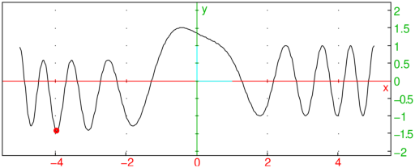
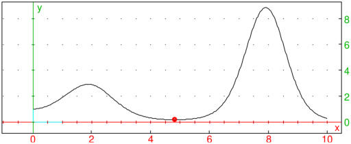

5.53.1 Univariate global minimization on a segment: find_minimum
The find_minimum command is used for global minimization of a continuous
function on a segment.
find_minimum takes between three and five arguments:
-
f, a continuous univariate function or expression.
- a, a real number.
- b, a real number such that a<b.
- Optionally, a sequence of one or two numbers being either:
-
ε∈⟨ 0,1⟩, the optimality tolerance (by default, ε=ε02/3, where ε0 is the number returned by
the command epsilon), or
- n∈ℤ, the maximum number of iterations (n≥ 1 is required)
for Brent’s method subroutine (by default, n=100).
find_minimum applies a modification of Brent’s algorithm which usually finds a global
minimum, even when f has many local extrema.
The original Brent’s method is used as a subroutine which is applied recursively by
partitioning the search interval. Each instance is allowed the maximum of n iterations.
Examples
-
We minimize a function which has several local extrema, one of which is global.
Input:
| f(x):=Airy_Ai(x+sin(x))+cos(x^2):; |
| x0:=find_minimum(f(x),-5,5)
|
- Output:
Input:
plot(f(x),x=-5..5); point(x0,f(x0),display=point_width_3+point_point+red)
Output:

- The objective function in the example below is unimodal,
with a single local minimum which is also the global minimum.
Input:
| f(x):=besselJ(x,2)/Gamma(x+1)+(x+1)^sin(x):; |
| x0:=find_minimum(f(x),0,10)
|
- Output:
Input:
plot(f(x),x=0..10); point(x0,f(x0),display=point_width_3+point_point+red)
Output:

- The following function is continuous but not differentiable.
It has three local and only one global minimum at x0=−1. Note that we are passing the function
itself as the first argument. Also, the parameters ε and n are set to 10−5
and 30, respectively.
Input:
| f(x):=(min(sqrt(abs(x+4))-1,sqrt(abs(x+1))-1005/1000,sqrt(abs(x-3))+1/2):; |
| x0:=find_minimum(f,-5,5,1e-5,30)
|
- Output:
Input:
plot(f(x),x=-5..5,xstep=5e-4); point(x0,f(x0),display=point_width_3+point_point+red)
Output: